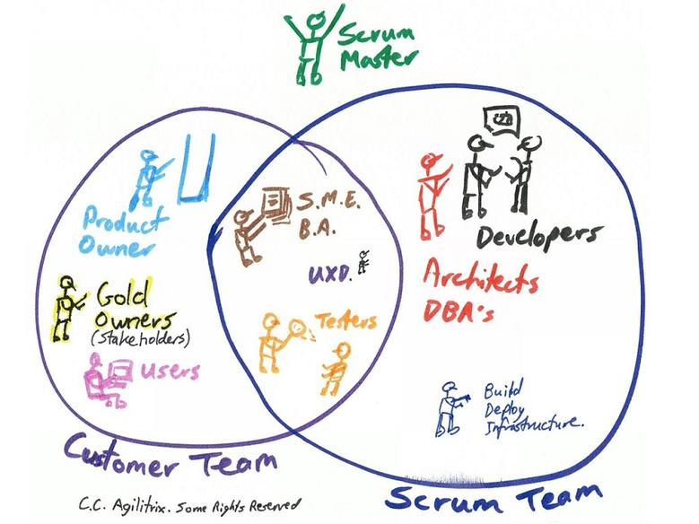

Desafios de um time ágil em uma organização em transformação ágil
Raphael Rodrigues
Contexto
Um Scrum Master, com DNA Ágil, iniciando na organização
Um grande instituição financeira em transformação ágil
Stakeholders:
Infraestrutura - Patrocinador
Arquitetura Corporativa
Analistas de Negócio
Usuários finais
Início do Projeto
Evolução Backlog

Evolução Backlog

Evolução Backlog

Time Scrum
Feedbacks
Evolução Backlog

Evolução Backlog
Lições Aprendidas
Lições Aprendidas
Desenvolvimento Ágil = Cultura + Práticas + Ferramentas
| Positivo | Melhorar |
| Leadtime 42 > 24 > 7 dias | Precisava de um PO |
| Estavamos maduros com o processso de build | Falta de ferramentas de integração contínua |
| Contado com usuários finais | Lidar com ego |
| Credibilidade com os patrocinadores | Escalar Feedbacks |
| Controle do ciclo de desenvolvimento | Falhavamos nas Dailies |
Dúvidas?

Obrigado!
Raphael Rodrigues